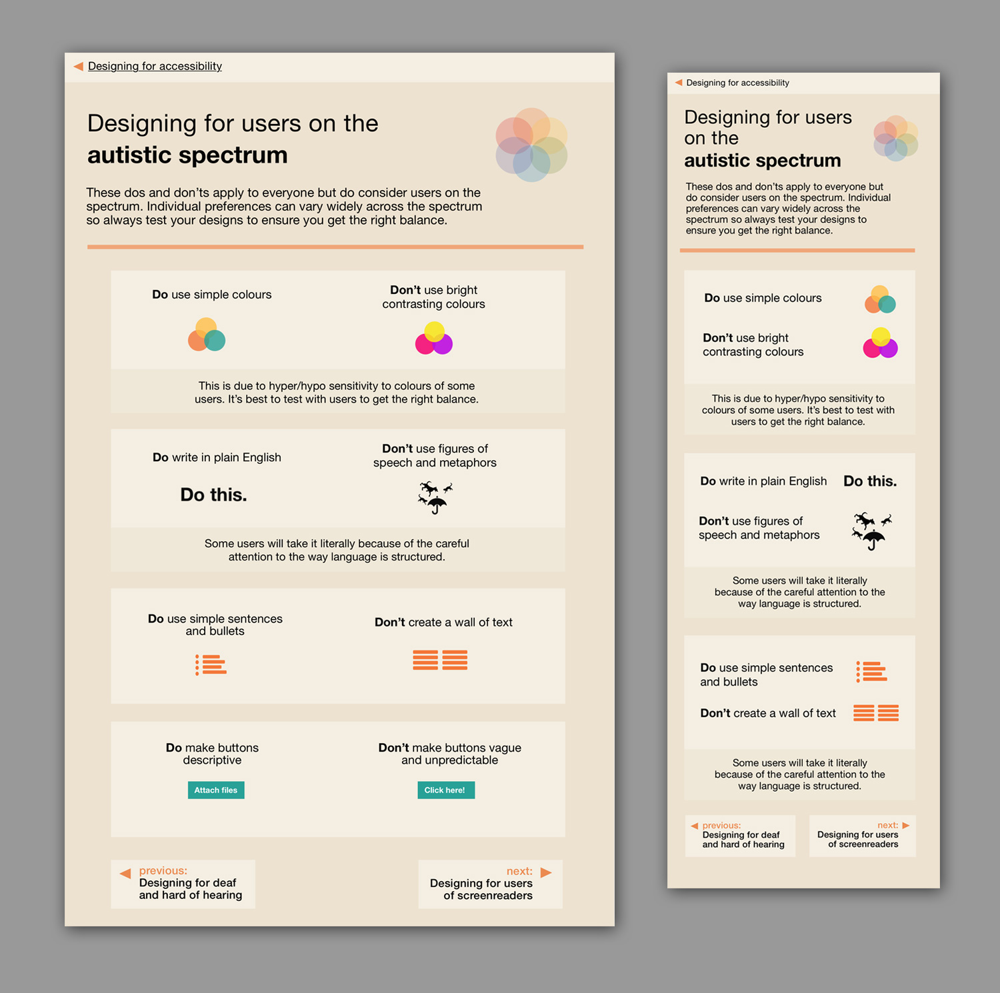
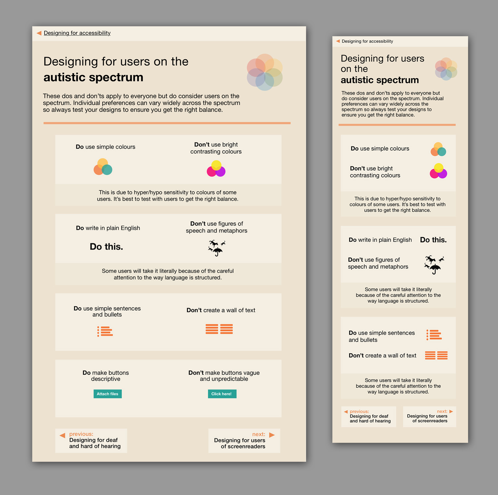

Accessibility posters
HOME OFFICE DIGITAL
Following work to collect together knowledge on how you can make your designs more accessible, a home office designer, Karwai Pun, wanted to consolidate this knowledge and make it shareable so created a set of Accessibility posters. With the posters being widely shared and being used as a resource for designers and educators, it became apparent that there was a need for accessible versions of the posters.
First I created accessible pdfs using a combination of InDesign and Acrobat Pro which now sit on the Home Office Digital github site. Pdfs still have their limitations though; they are not fully accessible, they don't allow their users to customise contrast and colour, and they have to be downloadeded. It was important to continue to develop an html version that could be truly accessible to all users.
I began prototyping a version of the posters into html, iterating from feedback from the accessibility design community with easy navigation, tabbed reading order, and fully descriptive alt text in simple html/css. This sits now as an opensource responsive version of the posters that are moving towards being fully accessible.
Wanting to further utilise the affordances that a website provides, through iteration I went through consideration of functionality in it's web form; should all the 'do's and don'ts' exist in one place and be filtered for which needs the user of the website is looking for, or how the site might be navigated for best reference. I settled on a more simpler form that's more true to the original posters. This will allow future research and additional information to be easily added into by contributers, and upkept by anyone. This is being developed and worked on now.


 
